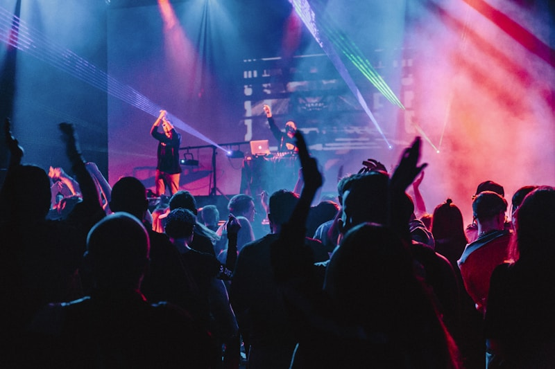

Chungha (IOI) Retiring? Popular Idol's Plans For Part-Time Work Abroad Shock Fans

In a revelation that has left the K-Pop community stunned, solo artist Kim Chungha—known for her powerful vocals, mesmerizing dance skills, and decade-long career spanning IOI and her successful solo endeavors—has opened up about potentially stepping back from the entertainment industry to pursue what she described as a "normal life," including part-time work abroad.
The 30-year-old artist made the surprising comments during a recent live broadcast on Instagram, where she spent over two hours engaging candidly with fans about her past, present, and uncertain future. What began as a casual Q&A session took an emotional turn when Chungha began discussing her evolving relationship with her career and her dreams beyond the spotlight.
"Sometimes I think about what it would be like to just be Chungha, not 'Chungha the idol,'" she said during the broadcast, her tone contemplative. "I've been doing this since I was a teenager. I'm grateful, truly grateful, but there's a whole world I've never experienced. I want to know what that feels like."
The Revelation That Shocked Fans
The most surprising moment came when Chungha revealed she had been researching working holiday visa programs and part-time job opportunities in countries including Australia, Canada, and New Zealand. She mentioned having looked into positions at cafes and small businesses, describing an appeal in the anonymity such work might provide.
"I looked at cafe jobs in Melbourne. Can you imagine? Me, making lattes for people who have no idea who I am. No expectations, no performances, no cameras. Just... existing. The thought of it feels incredibly peaceful." — Chungha, during Instagram Live
She emphasized that nothing was confirmed and that she was simply exploring options, but the mere discussion sent shockwaves through her fanbase. Clips from the broadcast went viral within hours, with fans expressing a mixture of support, concern, and sadness at the possibility of losing one of K-Pop's most beloved solo artists.
Chungha also touched on the exhausting nature of idol life, describing a disconnect between the glamorous image projected to the public and the reality of constant schedules, limited personal freedom, and the pressure of maintaining relevance in an industry that prizes youth above almost all else.
A Decade in the Spotlight
Chungha's career has been nothing short of remarkable. She first captured public attention as a contestant on Mnet's survival show "Produce 101" in 2016, ultimately debuting as a member of the project group IOI. The group achieved massive success during their limited promotional period before disbanding as scheduled in 2017.
Following IOI's conclusion, Chungha embarked on a solo career that would establish her as one of K-Pop's premier female soloists. Hits like "Roller Coaster," "Gotta Go," "Snapping," and "Bicycle" showcased her versatility as an artist, while her technical dance abilities earned her respect throughout the industry.
She has won numerous awards, collaborated with international artists, and maintained a consistent presence in the industry for nearly a decade—an impressive feat in K-Pop's fast-moving landscape. Her decision to even consider stepping away represents a significant potential shift in what has been a model career.
The Weight of Being "Always On"
During the broadcast, Chungha spoke at length about the psychological toll of celebrity life, particularly the expectation to always be performing even in personal moments. She described feeling like she hasn't had a genuine day off in years, with even supposed rest periods filled with content creation, fan service, and maintaining her public image.
"Even when I'm at home, alone, I'm still 'Chungha,'" she explained. "I plan content, I think about what fans expect, I worry about my next comeback. I don't remember the last time I spent a day without thinking about my career at all. I miss having that kind of mental freedom."
She also addressed the aging pressures in K-Pop, acknowledging that at 30, she's frequently described as a "veteran" or "senior" artist in an industry where the average debut age continues to drop. While she expressed pride in her longevity, she admitted to sometimes feeling like she's fighting against an industry that naturally favors newer, younger acts.
Fan Reactions: Supportive But Heartbroken
The response from Chungha's fanbase, known as Byulharangs, has been overwhelmingly supportive but tinged with evident sadness. Fan communities have been flooded with messages expressing understanding for her feelings while also hoping she ultimately chooses to continue her career.
"We became fans of Chungha the artist, but we love Chungha the person more. If making lattes in Australia makes her happy, then we'll support her. We just want her to be okay." — Top comment on Chungha fan forum
Some fans have organized message campaigns to show Chungha appreciation, hoping to remind her of the positive impact she's had on their lives. Others have called for her agency to give her more creative freedom and reduced schedules, arguing that burnout is a preventable problem if managed properly.
A smaller contingent of fans has expressed frustration, viewing the revelation as potentially attention-seeking or premature given that no concrete decisions have been made. However, this perspective has been largely criticized by the broader community as unsympathetic to Chungha's genuine emotional expression.
Agency Response
MORE Vision, Chungha's current agency, released a brief statement following the broadcast's viral spread. The statement acknowledged Chungha's comments while emphasizing that no official decisions about her career trajectory had been made.
"Chungha-ssi's wellbeing is our top priority," the statement read. "We are in ongoing discussions with her about her future activities and will continue to support whatever path she chooses. At this time, there are no confirmed changes to her schedule, and we ask that fans not spread speculation."
Industry insiders suggest that agencies are often caught off-guard by such candid broadcasts, as they complicate narrative management and can affect commercial partnerships. Whether Chungha will face any professional repercussions for her honesty remains to be seen.
A Growing Trend?
Chungha's contemplation of leaving the industry reflects a broader pattern observed among K-Pop artists who debuted young and have spent most of their adult lives under the intense scrutiny of celebrity. Several prominent idols have recently spoken about burnout, identity struggles, and the desire for normalcy.
The conversation has also sparked discussions about the sustainability of the idol career model, which often demands complete dedication during artists' formative years with limited consideration for long-term personal development. Some argue that the industry needs to evolve to offer more balanced lifestyles that don't force artists to choose between their careers and personal fulfillment.
Mental health advocates have praised Chungha for her honesty, noting that such public discussions help destigmatize conversations about career dissatisfaction and the search for meaning beyond professional success. "What she's describing isn't failure—it's self-awareness," one expert commented. "More people should feel empowered to question whether their current path is truly serving them."
What Comes Next
For now, Chungha's future remains uncertain. She has several scheduled appearances in the coming months, and there's no indication she plans to cancel existing commitments. However, fans and industry observers alike will be watching closely for any signs of which direction she ultimately chooses.
The possibility of one of K-Pop's most accomplished soloists trading stadium stages for cafe counters might seem improbable to some. But for Chungha, it appears to represent something perhaps even more valuable than continued success: the freedom to discover who she is beyond the image the industry created.
Whether she stays, goes, or finds some middle ground, her willingness to share these vulnerable thoughts has already made an impact. For every aspiring idol watching, her words serve as a reminder that even the most successful careers come with costs that aren't always visible from the outside.
AsianBus Wire will provide updates on Chungha's career decisions as they develop.
💬 Comments